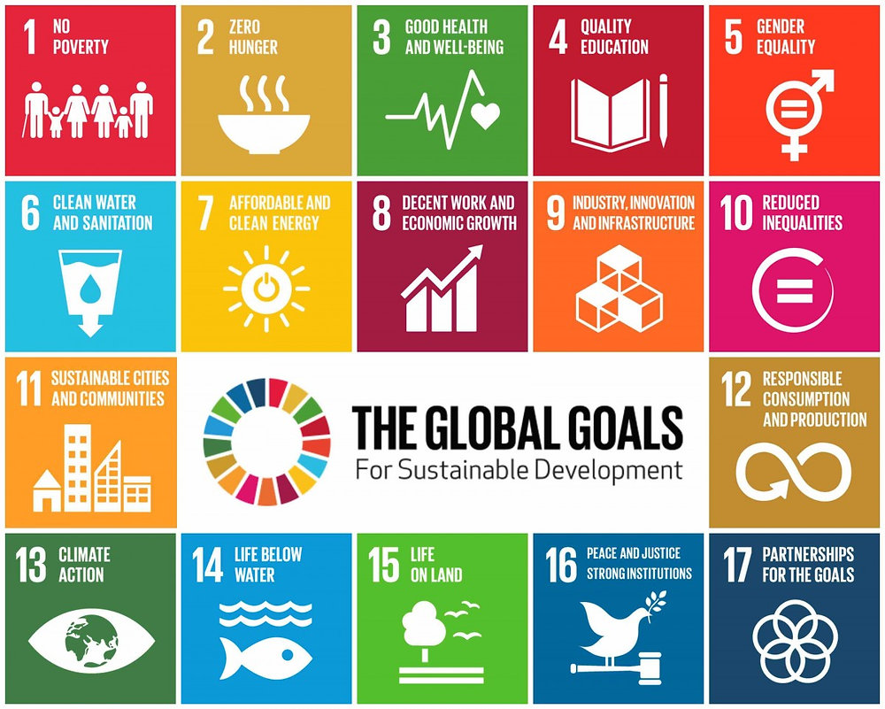
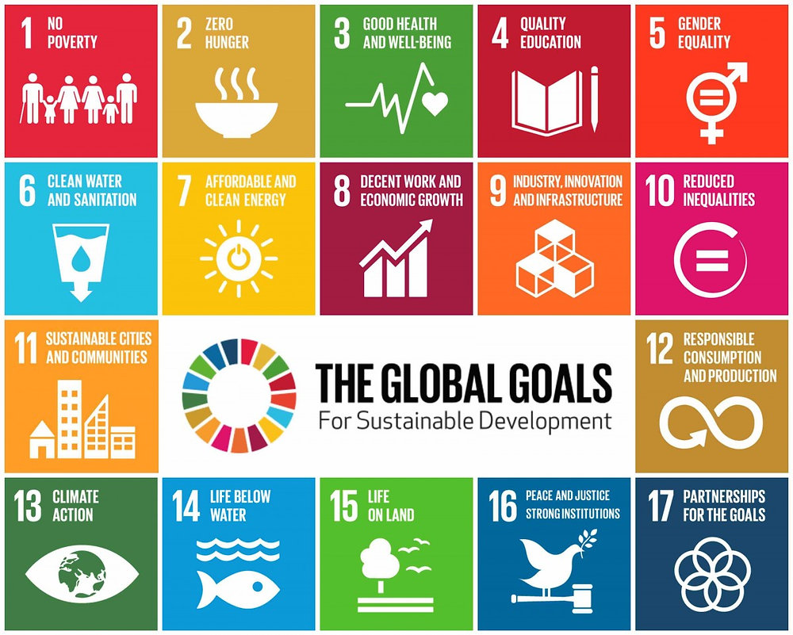

.png)
Secara tingkat individu, beberapa solusi yang kita dapat lakukan adalah untuk menghemat penggunaan energi – yang menurut saya paling mudah dilakukan oleh semua orang adalah untuk menghemat penggunaan AC. Secara keseluruhan, kita harus sadar dengan betapa pentingnya energi dan listrik, maka saat menggunakan elektronik mulai dari handphone, laptop, sampai Smart Tech yang di rumah kita masing-masing. Kedua, adalah untuk mempertimbangkan transportasi kendaraan listrik dengan jalan kaki ataupun bersepeda. Walaupun kendaraan listrik lebih hemat dan ramah-lingkungan dibandingkan mobil yang melepaskan emisi gas – penggunaan mobil pribadi harus tetap hemat karena kendaraan listrik memiliki masalah seperti dampak lingkungan dari produksi baterai (termasuk penambangan bahan baku seperti litium dan kobalt).
 

Dengan tingkat masyarakat, kita sebagai komunitas harus mengutamakan kesadaran sesama untuk mencapai tujuan yang bertahun-tahun sedang membebani masyarakat kita dan yang menghambat kemajuan negara Indonesia melalui seminar di desa-desa dimana pendidikan kurang memprioritaskannya. Selain itu, solusi kedua yang kita dapat lakukan adalah untuk membantu UMKM berarah untuk hemat energi dan mendukung perusahaan yang lebih memprioritaskan teknologi yang terbarukan lokal.